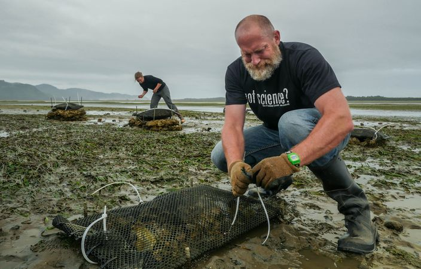
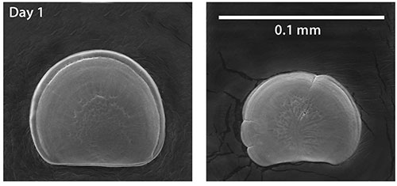

Shellfish form the backbone of a $280 million annual industry in the Pacific Northwest - across a chain of suppliers, hatcheries, growers, processors, distributors, and vendors.
Many indigenous peoples in the Pacific Northwest also place a special economic and cultural value on shellfish, and have done so for millennia.
Shellfish also provide critical ecosystem services by filtering water and improving its quality. A single shellfish can filter up to 50 gallons of water every day!
Video from YouTube by Oregon State University
The ocean naturally absorbs carbon dioxide from the atmosphere - like a giant "carbon sink". Human activity has drastically increased the amount of CO2 in the atmosphere through the combustion of fossil fuels, and this has resulted in much more dissolved CO2 in the ocean. This change in the ocean's chemistry lowers pH and leads to a more acidified ocean.
Ocean acidification (OA) affects shellfish like oysters and mussels during critical growth and development stages. Shell-forming species rely on carbonate to build their shells, and this ability is hindered in acidified water because a lot more carbonate is bound to extra H+ ions.
The image below shows damage to oyster larvae from acidified water (right) compared to healthy larvae (left).
Micrograph by Oregon State University
OA is occurring with greater intensity in the Pacific Northwest than anywhere else in the world. This poses a threat to ecosystems and economies that depend on them. The region is both a harbinger of things to come for other coastlines that will ultimately face OA exposure, and a laboratory for innovation on successful adaptation investments and strategies.
pH (acidity)
Aragonite Saturation (corrosivity)
Researchers and OA stakeholders at Oregon State University and the Pacific Shellfish Institute have partnered with NOAA to identify pathways for OA adaptation.